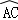
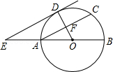
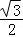
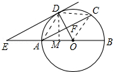

2016年北京市中考数学试题 · 数学解答题 第25题 · 对应解析
25．（5分）（2016•北京）如图，AB为⊙O的直径，F为弦AC的中点，连接OF并延长交

于点D，过点D作⊙O的切线，交BA的延长线于点E．（1）求证：AC∥DE；
（2）连接CD，若OA=AE=a，写出求四边形ACDE面积的思路．

【解答】（1）证明：∵ED与⊙O相切于D，
∴OD⊥DE，
∵F为弦AC中点，
∴OD⊥AC，
∴AC∥DE．
（2）解：作DM⊥OA于M，连接CD，CO，AD．
首先证明四边形ACDE是平行四边形，根据S平行四边形ACDE=AE•DM，只要求出DM即可．
∵AC∥DE，AE=AO，
∴OF=DF，
∵AF⊥DO，
∴AD=AO，
∴AD=AO=OD，
∴△ADO是等边三角形，同理△CDO也是等边三角形，
∴∠CDO=∠DOA=60°，AE=CD=AD=AO=DD=a，
∴AO∥CD，又AE=CD，
∴四边形ACDE是平行四边形，易知DM=

a，∴平行四边形ACDE面积=a2．
